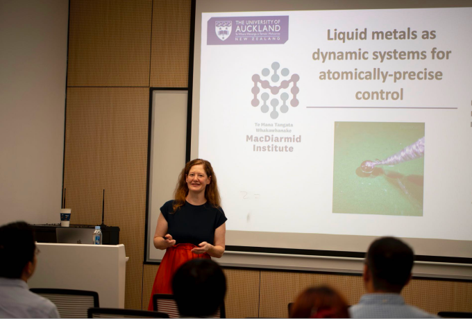

Engineering Special Seminar | Nicola Gaston:Liquid Metals as Dynamic Systems for Atomically-Precise Control
Date: October 18, 2024
Introduction:
Nicola Gaston is a Professor in Physics at the University of Auckland, where her research group conducts quantum-mechanical simulations of the electronic and thermodynamic behaviour of nanoscale materials, aiming to find new ways of making materials that address issues of sustainability – whether addressing issues of energy sustainability, or designing materials to be more sustainably synthesized and indeed recycled. She has been the Co-Director of the MacDiarmid Institute for Advanced Materials and Nanotechnology, a New Zealand Centre of Research Excellence, since 2018. She also served as the elected President of the New Zealand Association of Scientists in 2014 and 2015.
Abstract:
The manipulation of interatomic interactions for structural self-assembly is a seductive promise of nanotechnology, most tantalisingly made evident by biological examples in nature. Much of the promise of sustainability in materials science comes from the idea of such structural control being able to be achieved at low energetic cost.
At the risk of anthropomorphising atoms, this talk will present some examples of how, by developing an understanding of how particular atoms want to behave, we can manipulate structure by proxy. Not through forcible manipulation of atoms, but through understanding their environmental preferences, and how these change through changing many-body interactions as they assemble. The use of low-temperature liquid metals, such as gallium, as media for the dilution of other metals has led to an increasing variety of examples of how temperature- and concentration-dependent interactions can be used to direct the self-assembly of nanostructure, with astonishing precision, resulting in novel pattern formation.
This talk will introduce the use of ab initio molecular dynamics for the elucidation of the mechanisms of structural formation, whether via the differential mobility of dopant metal atoms, or due to the formation of structure at the surface of the liquid metal, or indeed due to nanocrystal formation fully within the liquid metal environment. It will also cover the use of such techniques to describe the differences between solid and liquid alloy catalysts, particularly relating to the dynamic behaviour of the surface as it interacts with reacting molecules. Finally, it will finish with some comments on what these studies have taught us about the complex structure of the liquid environment itself.